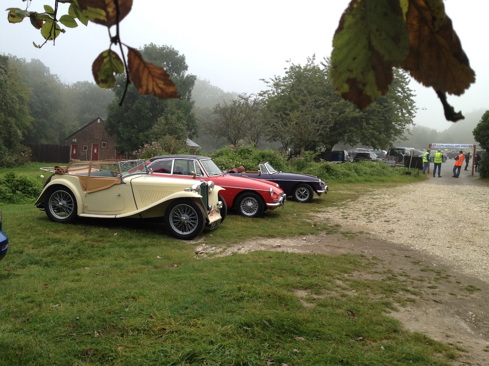
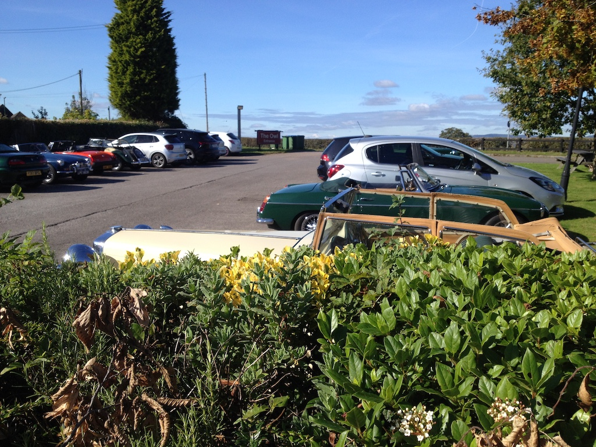

First Outing After Lockdown - April
 Due to the current Covid-19 restrictions, the last time that I took the TC out for a run was in November last year. On Wednesday 14th April I had to deliver something to Victoria Grand and the sun was shining. So I started the TC and drove down to Lancing, along the coast through Worthing and up to Victoria Grand. Having delivered the documents and waved to Dad from his window, I drove up to Washington and back home. A total of 26 miles. It was wonderful. The only down-side was that the carburettors were leaking fuel!
Due to the current Covid-19 restrictions, the last time that I took the TC out for a run was in November last year. On Wednesday 14th April I had to deliver something to Victoria Grand and the sun was shining. So I started the TC and drove down to Lancing, along the coast through Worthing and up to Victoria Grand. Having delivered the documents and waved to Dad from his window, I drove up to Washington and back home. A total of 26 miles. It was wonderful. The only down-side was that the carburettors were leaking fuel!
Camelia Botna
Another sunny day (Tuesday 20th April) with hardly a breath of wind. So we decided to go to Camelia Botna for morning coffee and to look around the plant nursery; a slightly belated birthday outing. We went via Ashurst and then returned via Henfield, arriving home just in time to prepare lunch after a round trip of 21 miles. Both this and the previous run are a little short for inclusion in this record, but after not taking the TC for so long they are quite significant. The TC ran well, although the tick-over was a little high. So later in the afternoon I did some adjustments. In spite of having tightened the bolts on the carburettors, a few had worked loose again.
MGCC Spring Run to Leonardslee Gardens
 When we left in the TC at ten o'clock on Sunday 23rd May it was raining! However, the rain stopped on our way to Ashington, where we met up with those at the southern start for the run at the Red Lion. We sat with Chris and Maureen and had coffee and cake before setting off at 10:45. We left the hood up, although it didn't rain again until we had parked at Leonardslee. It was a 30 mile route down some narrow and bumpy lanes, but was enjoyable and the car ran well.
When we left in the TC at ten o'clock on Sunday 23rd May it was raining! However, the rain stopped on our way to Ashington, where we met up with those at the southern start for the run at the Red Lion. We sat with Chris and Maureen and had coffee and cake before setting off at 10:45. We left the hood up, although it didn't rain again until we had parked at Leonardslee. It was a 30 mile route down some narrow and bumpy lanes, but was enjoyable and the car ran well.
There were due to be 100 cars on the run, approximately half starting from Ashington and half from Leatherhead. The south car park at Leonardslee was reserved for the MGCC. After lunch in the cafe and a walk around the garden we left at about three o'clock, getting home in time for a cup of tea. This time we had the hood down. We did a total of 51 miles. Unfortunately there was still a smell of petrol when we got home. My use of threadlock does not seem to have been completely successful.
Sussex Wanderers, Ashington to Maplehurst
This was the barbecue run postponed until Wednesday 11th August. It was essentially the same route that was used for the Spring Run, except that one of the roads was closed and we stopped at Maplehurst where we had a good barbecue outside. Although it was cloudy when I left home, the sun came out before we left the Red Lion in Ashington. Overall the TC did 41 miles, but I had to tighten the 'hold-up' bolts on the carburettors when I got home.
South Downs Run
We were up early on Sunday 5th September and took the TC to Whiteways Lodge (14 miles from home), arriving by eight. The other helpers had already set things up. We then spent until 10:30 marshalling the arrivals. Then we set off on the run. After about 20 miles the engine started to 'stutter'. It was intermittent, so we stopped at the Castle Hotel in Bramber for coffee and to look at the car. There were no leaks, but the fuel pump seemed to be sticking. After a couple of 'hits' with the socket set handle it seemed to be working. We set off again in the hope that all was well. Unfortunately the problem persisted and after a little more than 60 miles (it was 80 miles from Whiteways to Eastbourne) it was quite bad. We had taken advice and continued down the A22 rather than turn off towards the Drusila's roundabout, where there are serious roadworks. So we stopped in a service area at Hailsham, where there was a garage, shop, a Greggs, a Starbucks and a Travelodge. By luck there was also an RAC patrol man who was just finishing helping other people. He tested various things, by which time the engine would not start!
 So we had to phone the RAC to ask for a recovery. I thought the lady said someone would be with us within 90 minutes. Then a text arrived to say that they were passing it to a 'partner'. Westbourne Motors then phoned to say that they would be with us in four or five hours!
So we had to phone the RAC to ask for a recovery. I thought the lady said someone would be with us within 90 minutes. Then a text arrived to say that they were passing it to a 'partner'. Westbourne Motors then phoned to say that they would be with us in four or five hours!
The man who arrived with a car transporter lived in Upper Beeding! He was very careful and very skilled. He unloaded the car into the garage in almost exactly where it normally stands. It was about 7:30 when we got home, having driven the TC 78 miles, the rest being on the back of the truck!
Sussex Wanderers, Adversane to Kingsfold
The day started sunny, calm and reasonably warm, although I did wear my winter coat and a wooly hat. I was initially driving west, so I took my sun hat for the run itself. This was the first serious run since I replaced the kingpins (apart from a 17 mile test run).
David F-B was going to be late, so we arranged to meet at the Blacksmith's Arms at Adversane and then decide which car to take on the run. He arrived just before we were due to set off and we took the TC. It was good to be in a convoy of MGs, driving down country lanes with the hood down in the sunshine. The photo was taken at The Owl at Kingsfold. Although the pub is on the A24, we didn't actually go on the 24. The car park is very spread out, so you can't see all the cars, but there must have been about 30.
It was a pity that we had to wait over an hour for our food, but we were able to have a good natter. We then went back to the A29 and down that to Adversane so that David could pick up his car and I came home via Ashington and Wiston, a total of 63 miles over the day. I arrived home at ten to four, just before Angela got home.
Sussex Wanderers, Dragon's Green to Bolney
This was the first run after making and installing a new shim for the near-side cotter pin. I left home at ten and we met at the George and Dragon at Dragon's Green, just off the A272 near Shipley. It was slightly drizzly, so I kept the hood up, but noticed a 'clatter' from the frame as the car went over rough road surfaces. When I arrived I found the the middle hoop had come away from the rest of the frame! Even though some people did lower their hoods I left mine up in case I couldn't get it down or back up. There was a little more drizzle on the way, so it was a wise decision.
I knew all the roads on route to the Bolney Stage, so didn't need a navigator, although someone overtook me and then waited for me. Due to the season, the chosen route was on mainly on the more major roads. I sat with a group from the Chichester club for lunch and then came home via Cowfold and Henfield. After a total of 57 miles I arrived home at three o'clock.